VOL. 2026 AUTUMN · ISSUE NO. 08
P. 01
VOGUE & KINFOLK EDITORIAL EDITION
2026/11/11（三）– 11/18（三）共 7 晚
台東看牙・住宿推薦專刊
依山傍海的靜謐居所。為您嚴選配備電梯、平穩出入、步行 8–10 分鐘直達牙醫診所的高質感旅宿，讓看牙與休養都成為優雅從容的慢活時光。
👉
🔊 請打開手機音量（iPhone 請關閉靜音）
TAITUNG STAY · LOCATION & ACCESS
P. 02
📍 診所核心生活圈
DENTAL CLINIC & NEIGHBORHOOD
牙醫診所地理位置
台東市更生路689巷一帶（座標 22.766940, 121.136525）
核心地段
台東市更生路689巷靜巷，日常採買與餐飲便利，夜間清幽不吵雜。
推薦基準
3 間主推旅宿散步 8～10 分鐘即可抵達；另備 2 間安心備案供彈性選擇。
PRIMARY SELECTION 01 · 主推首選
P. 03
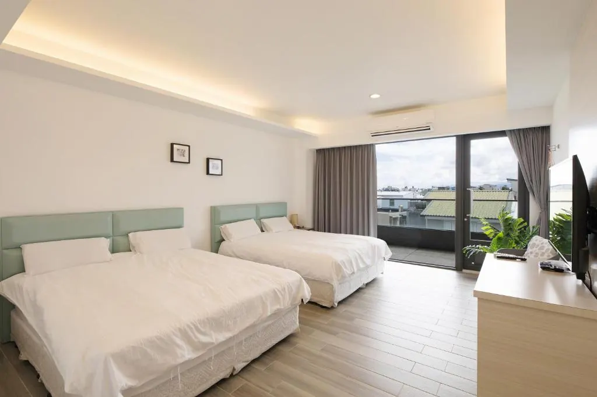
推薦房型 照片來源：Booking.com／業者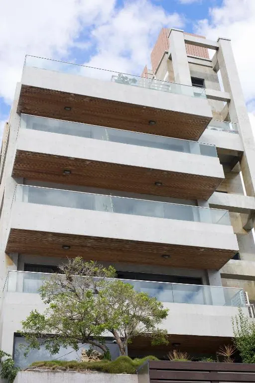
建築外觀 照片來源：Booking.com／業者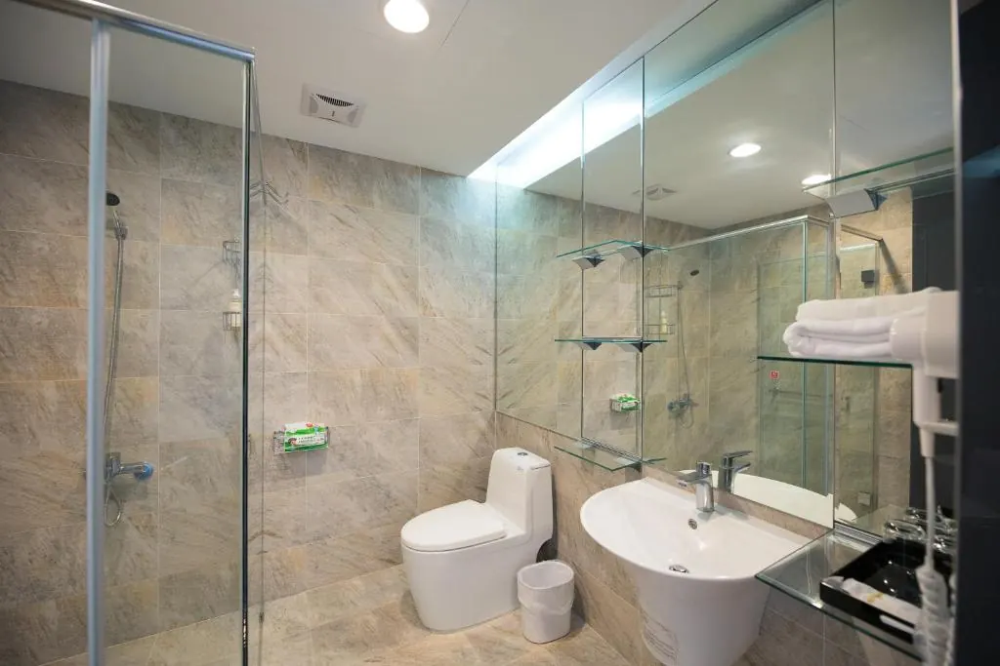
乾濕分離衛浴 照片來源：Booking.com／業者松柏文旅
🚶 步行到牙醫：550 公尺｜約 8 分鐘
7 晚含稅總價
TWD 13,794
地址與評分
台東市洛陽街342號 ｜ 8.5 分 高評
設施與房型
🛗 有電梯｜雙床房（2張單人床）或加大雙人床，20㎡ 附陽台
取消與提醒
10/28 前免費取消｜⚠️ 雙床房僅剩 1 間，建議儘早確認
PRIMARY SELECTION 02 · 主推推薦
P. 04
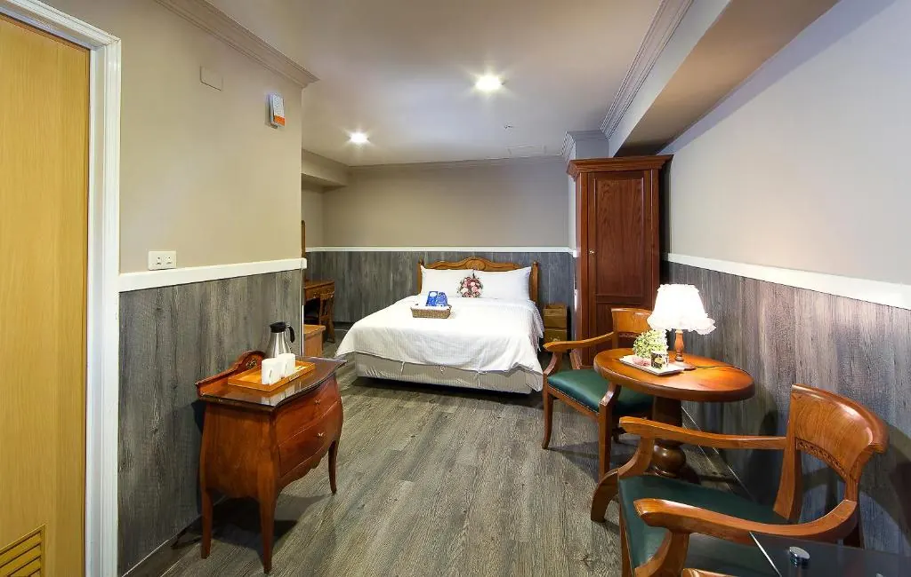
標準雙人房 25㎡ 照片來源：Booking.com／業者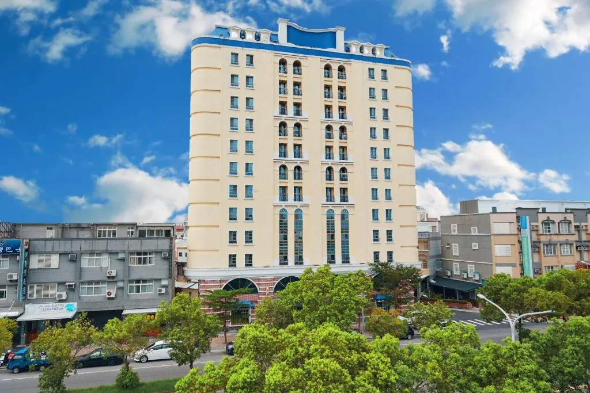
建築外觀 照片來源：Booking.com／業者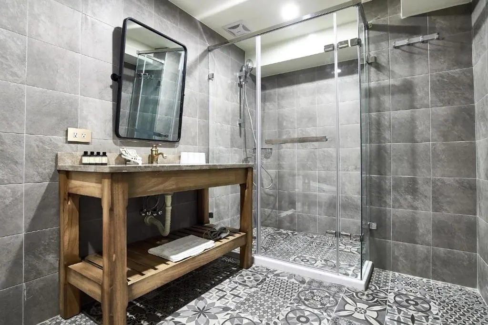
衛浴空間 照片來源：Booking.com／業者翠安儂風旅
🚶 步行到牙醫：走路約 8～9 分鐘
7 晚總價（含早餐）
TWD 11,920
地址與評分
台東市四維路三段152號 ｜ 8.2 分 法式優雅旅宿
安心設施
🛗 有電梯、浴室緊急呼救設備、24 小時櫃檯服務
房型與取消
標準雙人房 25㎡（含早餐）｜11/8 前可免費取消
PRIMARY SELECTION 03 · 主推推薦
P. 05
 特大雙人床房
照片來源：Booking.com／業者
特大雙人床房
照片來源：Booking.com／業者
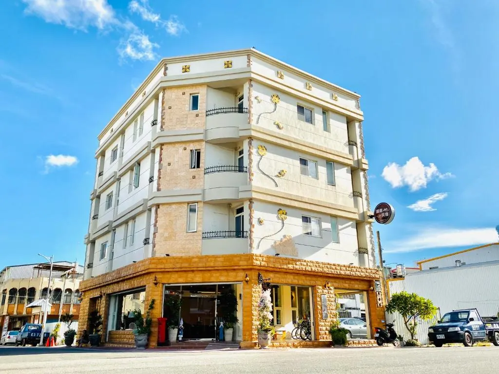
建築外觀 照片來源：Booking.com／業者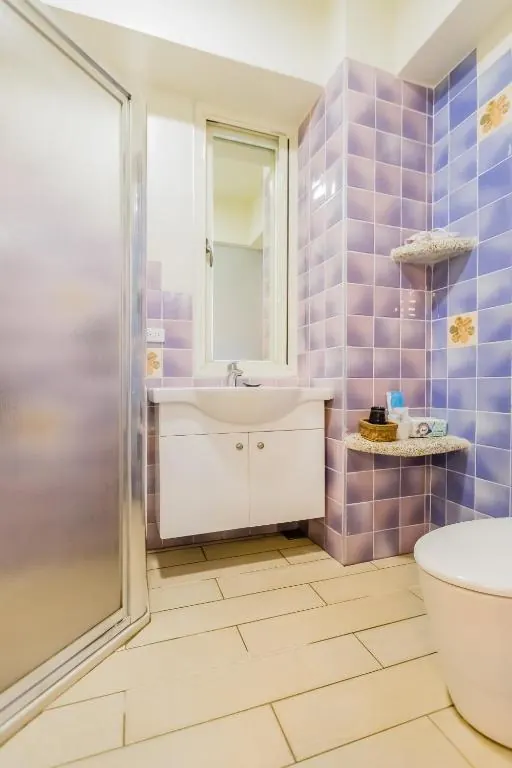
衛浴空間 照片來源：Booking.com／業者湯園民宿
🚶 步行到牙醫：700 公尺｜約 10 分鐘
7 晚總價（含早餐）
TWD 16,092
地址與評分
台東市中興路一段225號 ｜ 8.9 分 超高評價
長住亮點
🛗 有電梯、含早餐、房內專屬洗衣機與免治馬桶
房型與取消
特大雙人床房（戶外休息區）｜11/4 前免費取消｜⚠️ 僅剩 1 間
BACKUP SELECTION 01 · 品牌備案
P. 06
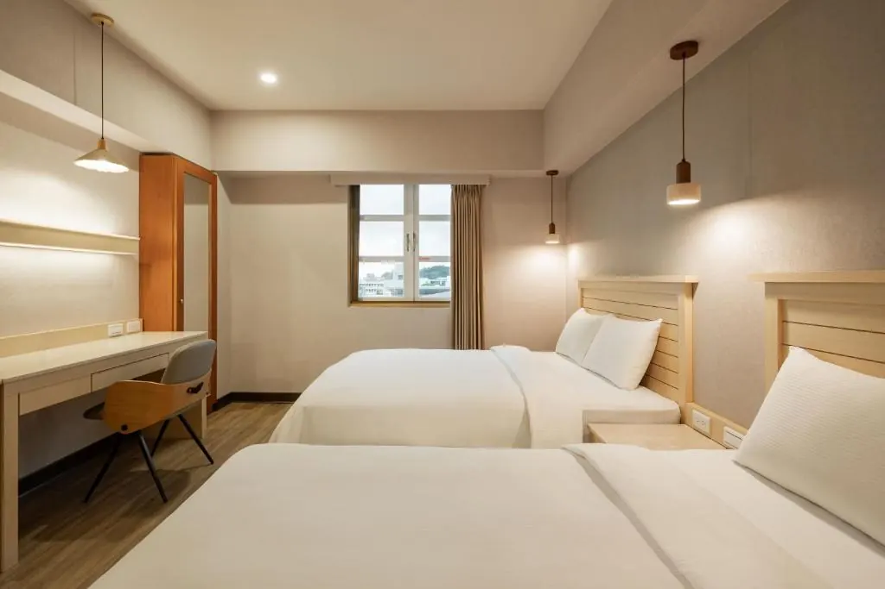
舒適四人間 26㎡ 照片來源：Booking.com／業者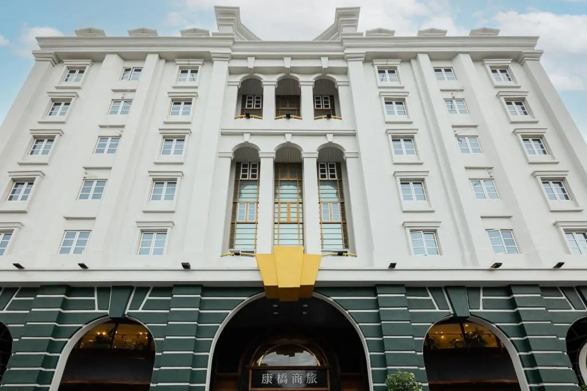
建築外觀 照片來源：Booking.com／業者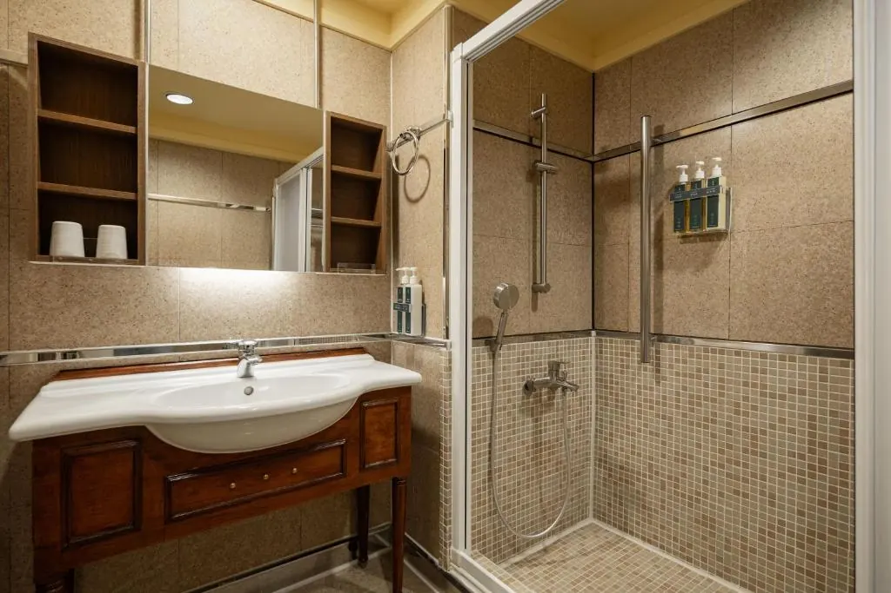
衛浴空間 照片來源：Booking.com／業者康橋大飯店 台東館
🚶 步行到牙醫：800 公尺｜約 11 分鐘
7 晚總價（含早餐）
TWD 38,790
地址與電話
台東市中興路一段209巷16號 ｜ 電話 089-229226
設施與房型
🛗 有電梯、含豐盛早餐｜舒適四人間（2張雙人床，26㎡，城市景觀）
取消與付款
11/9 前可免費取消，入住時付款
BACKUP SELECTION 02 · 庭園備案
P. 07
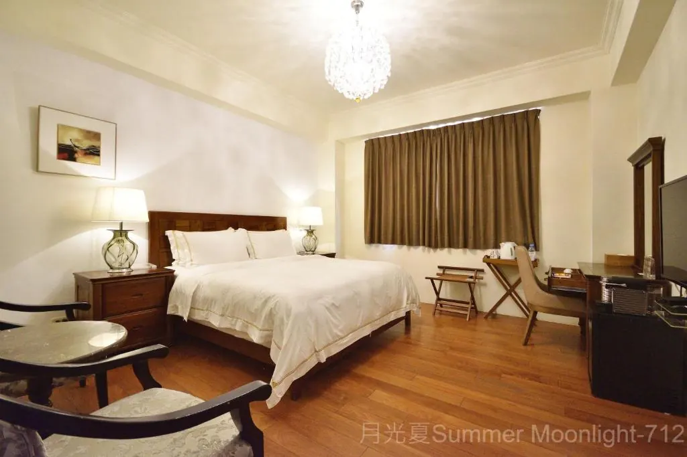
一樓雙人房 23㎡ 照片來源：Booking.com／業者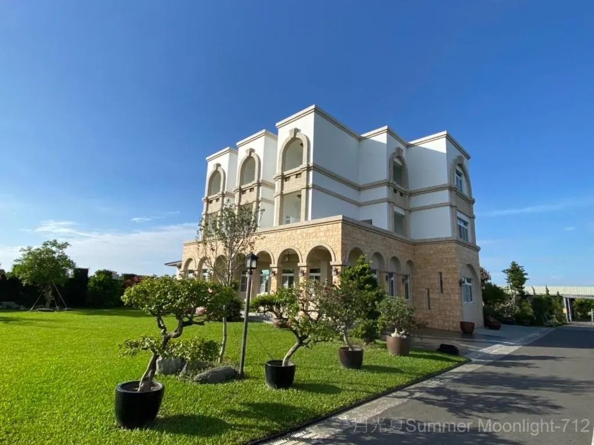
建築外觀與庭園 照片來源：Booking.com／業者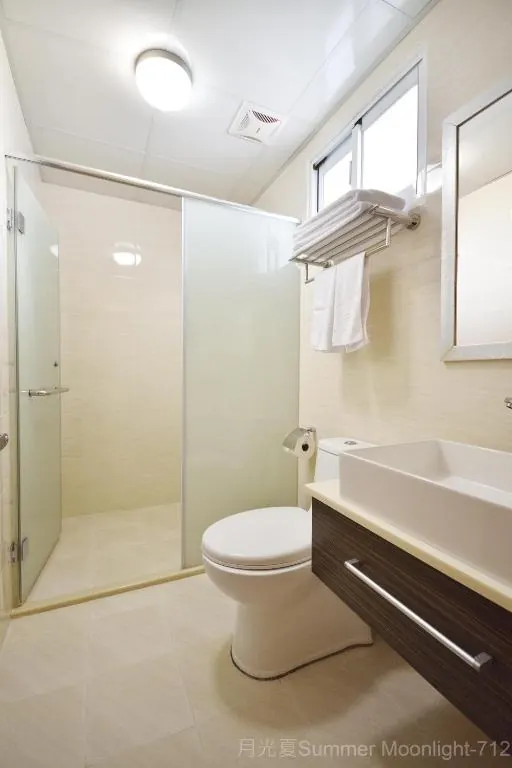
乾濕分離衛浴 照片來源：Booking.com／業者月光夏民宿
🚶 步行 1.9 公里（約 27 分）｜車程約 5 分
7 晚總價（含早 27,310）
TWD 25,945
地址與電話
台東市馬亨亨大道625號 ｜ 電話 089-219168
設施與服務
無電梯但房間在一樓免爬梯、有陽台、車站與機場接送
取消與提醒
11/4 前免費取消｜⚠️ 請先確認 10% 服務費是否已含在總價
EDITOR'S NOTE · 訂房與休養指南
P. 08
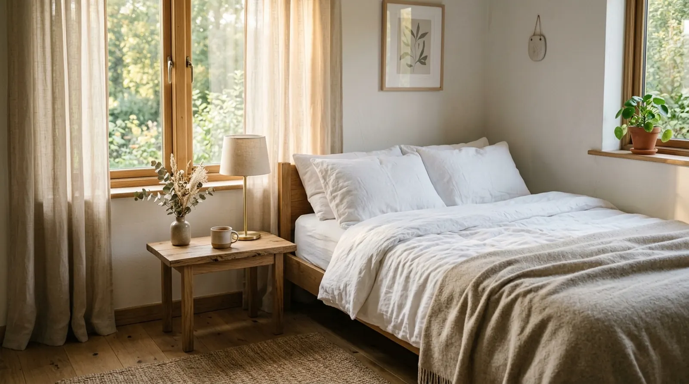
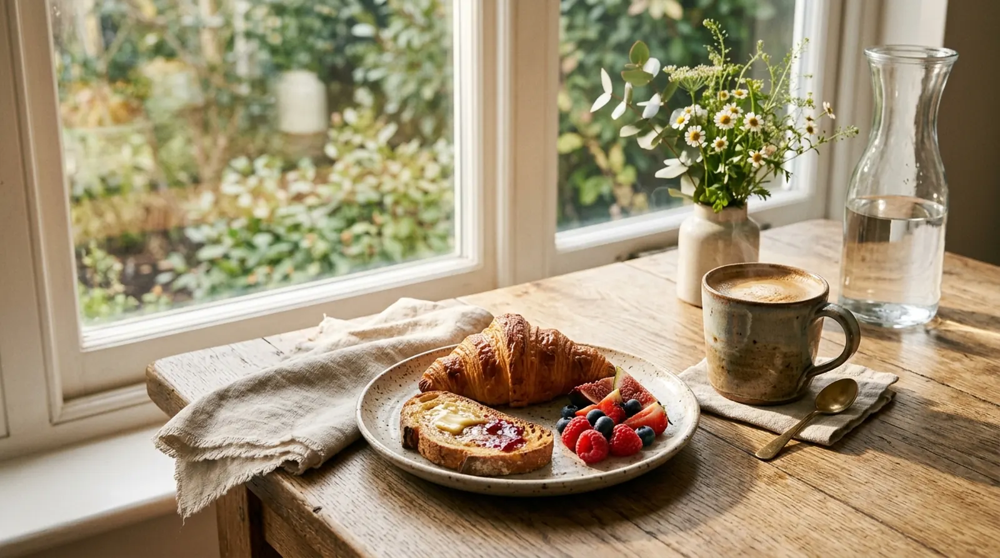
ESSENTIAL CHECKLIST
行前訂房 6 大叮嚀
01
確認對外窗：訂房前請先打電話向業者確認房間是否有窗戶。
02
早點預訂：十一月空房隨時會被訂走，建議儘早預訂。
03
詢問長住優惠：連住 7 晚可先打電話詢問是否有長住優惠。
04
彈性取消：優先選擇可以免費取消的訂房方案。
05
提早入住：從瑞士回來有時差，可先詢問能否提早入住。
06
房間冰箱：確認房內有冰箱，看完牙可以方便冰敷休養。
TAITUNG SLOW LIVING · 山海療癒手札
P. 09
🌿 東台灣秋季慢旅
AUTUMN IN TAITUNG
山海之間・靜心休養
十一月微涼秋風，最適合放慢步調的療癒時節
縱谷與太平洋
秋季的台東褪去盛夏暑氣，清晨有溫潤海風與山嵐，散步往返診所格外舒心。
溫軟飲食建議
看牙期間推薦品嚐在地溫熱豆漿、清燉鮮魚湯與軟綿米食，營養充足且不傷牙齦。
COLOPHON & BACK COVER · 專刊封底
P. 10
🌅 太平洋的溫柔晨曦
TAITUNG DENTAL STAY EDITION
祝您看牙順利・旅途平安
2026/11/11（三）– 11/18（三）共 7 晚
價格與空房為 2026/10/17 14:22（台灣時間）在 Booking.com 查詢的結果，實際以訂房時為準。